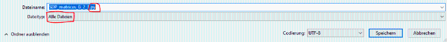

Step 2: SDP matrices "A"
(Analogous to above.)
We compute the matrices A_0 and A_\mu that appear in the SDP.
This is independent of the objective function f and only depends on the the root system, that is, on Type and n.
Those matrices are the coefficients of the truncated (localized) moment matrix in the Chebyshev basis and accordingly have two blocks.

| > | TMomentMatrix(Type,n,d); |
| (2.2.1) |
| > | TLocalizedMomentMatrix(Type,n,d-d_min); |
| (2.2.2) |
The following command produces a .csv file in the directory of the worksheet.
The file contains a matrix (corresponding to A_0) as a list of lists and and a list of matrices as lists of lists (corresponding to A_\mu).
| > | SDPMatrices(Type,n,d,"SDP_matrices_G_2_3.csv"); |
| (2.2.3) |
The content of SDP_matrices_G_2_3.csv looks as follows:
(A0, A) = ([[1, 0, 0, 0, 0, 0, 0, 0, 0], [0, 1/6, 0, 0, 0, 0, 0, 0, 0], [0, 0, 1/6, 0, 0, 0, 0, 0, 0], [0, 0, 0, 1/6, 0, 0, 0, 0, 0], [0, 0, 0, 0, 1/12, 0, 0, 0, 0], [0, 0, 0, 0, 0, 1/6, 0, 0, 0], [0, 0, 0, 0, 0, 0, 1, 0, 1], [0, 0, 0, 0, 0, 0, 0, 1, 0], [0, 0, 0, 0, 0, 0, 1, 0, 2]], [[[0, 1, 0, 0, 0, 0, 0, 0, 0], [1, 1/3, 1/3, 1/6, 0, 0, 0, 0, 0], [0, 1/3, 0, 1/3, 1/6, 0, 0, 0, 0], [0, 1/6, 1/3, 0, 1/6, 1/6, 0, 0, 0], [0, 0, 1/6, 1/6, 1/12, 1/6, 0, 0, 0], [0, 0, 0, 1/6, 1/6, 0, 0, 0, 0], [0, 0, 0, 0, 0, 0, 0, 1, 0], [0, 0, 0, 0, 0, 0, 1, 0, 2], [0, 0, 0, 0, 0, 0, 0, 2, 0]], [[0, 0, 1, 0, 0, 0, 0, 0, 0], [0, 1/3, 0, 1/3, 1/6, 0, 0, 0, 0], [1, 0, 1/3, 0, 0, 1/3, 0, 0, 0], [0, 1/3, 0, 0, 1/6, 0, 0, 0, 0], [0, 1/6, 0, 1/6, 1/12, 0, 0, 0, 0], [0, 0, 1/3, 0, 0, 0, 0, 0, 0], [0, 0, 0, 0, 0, 0, 0, 0, 0], [0, 0, 0, 0, 0, 0, 0, 0, 0], [0, 0, 0, 0, 0, 0, 0, 0, 0]], [[0, 0, 0, 1, 0, 0, 0, 0, 0], [0, 1/6, 1/3, 0, 1/6, 1/6, 0, 0, 0], [0, 1/3, 0, 0, 1/6, 0, 0, 0, 0], [1, 0, 0, 1/3, 0, 0, 0, 0, 0], [0, 1/6, 1/6, 0, 0, 1/6, 0, 0, 0], [0, 1/6, 0, 0, 1/6, 0, 0, 0, 0], [0, 0, 0, 0, 0, 0, -1, 0, 0], [0, 0, 0, 0, 0, 0, 0, 0, 0], [0, 0, 0, 0, 0, 0, 0, 0, 1]], [[0, 0, 0, 0, 1, 0, 0, 0, 0], [0, 0, 1/3, 1/3, 1/6, 1/3, 0, 0, 0], [0, 1/3, 0, 1/3, 1/6, 0, 0, 0, 0], [0, 1/3, 1/3, 0, 0, 1/3, 0, 0, 0], [1, 1/6, 1/6, 0, 1/6, 0, 0, 0, 0], [0, 1/3, 0, 1/3, 0, 0, 0, 0, 0], [0, 0, 0, 0, 0, 0, 0, 0, 0], [0, 0, 0, 0, 0, 0, 0, 0, 0], [0, 0, 0, 0, 0, 0, 0, 0, 0]], [[0, 0, 0, 0, 0, 1, 0, 0, 0], [0, 0, 0, 1/6, 1/6, 0, 0, 0, 0], [0, 0, 1/3, 0, 0, 0, 0, 0, 0], [0, 1/6, 0, 0, 1/6, 0, 0, 0, 0], [0, 1/6, 0, 1/6, 0, 0, 0, 0, 0], [1, 0, 0, 0, 0, 1/3, 0, 0, 0], [0, 0, 0, 0, 0, 0, 0, -1, 0], [0, 0, 0, 0, 0, 0, -1, 0, -1], [0, 0, 0, 0, 0, 0, 0, -1, 0]], [[0, 0, 0, 0, 0, 0, 0, 0, 0], [0, 0, 0, 0, 1/6, 0, 0, 0, 0], [0, 0, 1/6, 0, 0, 1/3, 0, 0, 0], [0, 0, 0, 1/3, 0, 0, 0, 0, 0], [0, 1/6, 0, 0, 1/12, 0, 0, 0, 0], [0, 0, 1/3, 0, 0, 0, 0, 0, 0], [0, 0, 0, 0, 0, 0, 0, 0, 0], [0, 0, 0, 0, 0, 0, 0, 0, 0], [0, 0, 0, 0, 0, 0, 0, 0, 0]], [[0, 0, 0, 0, 0, 0, 0, 0, 0], [0, 0, 0, 0, 1/6, 1/3, 0, 0, 0], [0, 0, 0, 1/3, 1/6, 0, 0, 0, 0], [0, 0, 1/3, 0, 1/6, 0, 0, 0, 0], [0, 1/6, 1/6, 1/6, 0, 1/6, 0, 0, 0], [0, 1/3, 0, 0, 1/6, 0, 0, 0, 0], [0, 0, 0, 0, 0, 0, 0, 0, 0], [0, 0, 0, 0, 0, 0, 0, 0, 0], [0, 0, 0, 0, 0, 0, 0, 0, 0]], [[0, 0, 0, 0, 0, 0, 0, 0, 0], [0, 0, 0, 0, 0, 1/6, 0, 0, 0], [0, 0, 0, 0, 1/6, 0, 0, 0, 0], [0, 0, 0, 1/6, 0, 0, 0, 0, 0], [0, 0, 1/6, 0, 1/12, 0, 0, 0, 0], [0, 1/6, 0, 0, 0, 0, 0, 0, 0], [0, 0, 0, 0, 0, 0, 0, 0, -1], [0, 0, 0, 0, 0, 0, 0, -1, 0], [0, 0, 0, 0, 0, 0, -1, 0, -2]], [[0, 0, 0, 0, 0, 0, 0, 0, 0], [0, 0, 0, 0, 0, 0, 0, 0, 0], [0, 0, 0, 0, 1/6, 0, 0, 0, 0], [0, 0, 0, 0, 1/6, 1/3, 0, 0, 0], [0, 0, 1/6, 1/6, 0, 1/6, 0, 0, 0], [0, 0, 0, 1/3, 1/6, 0, 0, 0, 0], [0, 0, 0, 0, 0, 0, 0, 0, 0], [0, 0, 0, 0, 0, 0, 0, 0, 0], [0, 0, 0, 0, 0, 0, 0, 0, 0]], [[0, 0, 0, 0, 0, 0, 0, 0, 0], [0, 0, 0, 0, 0, 0, 0, 0, 0], [0, 0, 0, 0, 0, 1/3, 0, 0, 0], [0, 0, 0, 0, 1/6, 0, 0, 0, 0], [0, 0, 0, 1/6, 1/6, 0, 0, 0, 0], [0, 0, 1/3, 0, 0, 0, 0, 0, 0], [0, 0, 0, 0, 0, 0, 0, 0, 0], [0, 0, 0, 0, 0, 0, 0, 0, 0], [0, 0, 0, 0, 0, 0, 0, 0, 0]], [[0, 0, 0, 0, 0, 0, 0, 0, 0], [0, 0, 0, 0, 0, 0, 0, 0, 0], [0, 0, 0, 0, 0, 0, 0, 0, 0], [0, 0, 0, 0, 0, 1/6, 0, 0, 0], [0, 0, 0, 0, 1/12, 0, 0, 0, 0], [0, 0, 0, 1/6, 0, 0, 0, 0, 0], [0, 0, 0, 0, 0, 0, 0, 0, 0], [0, 0, 0, 0, 0, 0, 0, 0, -1], [0, 0, 0, 0, 0, 0, 0, -1, 0]], [[0, 0, 0, 0, 0, 0, 0, 0, 0], [0, 0, 0, 0, 0, 0, 0, 0, 0], [0, 0, 0, 0, 0, 0, 0, 0, 0], [0, 0, 0, 0, 0, 0, 0, 0, 0], [0, 0, 0, 0, 1/12, 0, 0, 0, 0], [0, 0, 0, 0, 0, 1/3, 0, 0, 0], [0, 0, 0, 0, 0, 0, 0, 0, 0], [0, 0, 0, 0, 0, 0, 0, 0, 0], [0, 0, 0, 0, 0, 0, 0, 0, 0]], [[0, 0, 0, 0, 0, 0, 0, 0, 0], [0, 0, 0, 0, 0, 0, 0, 0, 0], [0, 0, 0, 0, 0, 0, 0, 0, 0], [0, 0, 0, 0, 0, 0, 0, 0, 0], [0, 0, 0, 0, 1/12, 1/6, 0, 0, 0], [0, 0, 0, 0, 1/6, 0, 0, 0, 0], [0, 0, 0, 0, 0, 0, 0, 0, 0], [0, 0, 0, 0, 0, 0, 0, 0, 0], [0, 0, 0, 0, 0, 0, 0, 0, 0]], [[0, 0, 0, 0, 0, 0, 0, 0, 0], [0, 0, 0, 0, 0, 0, 0, 0, 0], [0, 0, 0, 0, 0, 0, 0, 0, 0], [0, 0, 0, 0, 0, 0, 0, 0, 0], [0, 0, 0, 0, 0, 1/6, 0, 0, 0], [0, 0, 0, 0, 1/6, 0, 0, 0, 0], [0, 0, 0, 0, 0, 0, 0, 0, 0], [0, 0, 0, 0, 0, 0, 0, 0, 0], [0, 0, 0, 0, 0, 0, 0, 0, 0]], [[0, 0, 0, 0, 0, 0, 0, 0, 0], [0, 0, 0, 0, 0, 0, 0, 0, 0], [0, 0, 0, 0, 0, 0, 0, 0, 0], [0, 0, 0, 0, 0, 0, 0, 0, 0], [0, 0, 0, 0, 0, 0, 0, 0, 0], [0, 0, 0, 0, 0, 1/6, 0, 0, 0], [0, 0, 0, 0, 0, 0, 0, 0, 0], [0, 0, 0, 0, 0, 0, 0, 0, 0], [0, 0, 0, 0, 0, 0, 0, 0, -1]]])
Here, Type='G' is the simple Lie type, n=2 is the dimension, d=3 is the order of the relaxation and "SDP_matrices_G_2_3.csv" is the name we want to give to the file.
TASKS:
-Create the .csv file with the Maple proc "SDPMatrices".
-Convert the file to a .py file, e.g., in Windows 10 by saving as "SDP_matrices_G_2_3.py" (make sure to select "All Files (*.*)" under "Save as type"):
